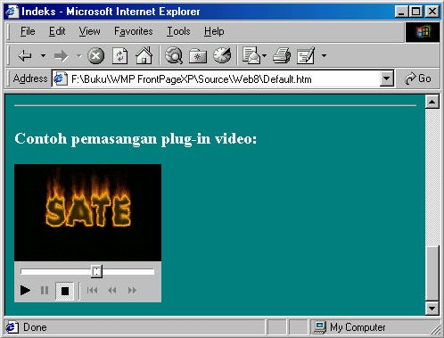

1 Video
Video memang memiliki daya tarik yang besar pada halaman web, namun
sayangnya video juga menyebabkan ukuran halaman web menggelembung.
Selain itu juga membutuhkan waktu yang lama untuk ditransfer ke browser. Sebagai
perbandingan, perlu waktu 7 hingga 10 detik untuk video berukuran 0,5 MByte saja
(bandingkan dengan kapasitas disket, 1,38 Mbyte).
Jika Anda harus memasang video di dalam situs, Anda seharusnya memberikan
pilihan kepada pemakai untuk memilih apakah mereka akan menampilkan video atau
tidak.
1.1 Memasang Video
Adapun langkah memasang video ke halaman adalah:
1. Pilihlah perintah Insert _ Picture _ Video. Kotak dialog Video tampil.
Gambar 8.1 Kotak dialog Video
2. Pada pilihan Files of type tentukan ekstensi file video, misalnya *.avi.
3. Anda bisa menggunakan Look in, atau icon-icon di sisi kiri untuk mencari file
Anda, misalnya basket.avi. File tersebut disertakan pada CD buku ini, yaitu di
folder Web8.
4. Setelah mendapatkan file video pilihan, klik Open, sebuah kotak tempat
memutar video akan muncul pada lokasi halaman yang Anda pilih.
Gambar 8.2 Kotak tempat memutar video
Setelah Anda menyisipkan video, Anda tidak akan melihatnya pada FrontPage,
hanya sebuah kotak. Anda baru bisa melihat video di browser atau di tampilan
preview. Selanjutnya Anda dapat mengubah ukuran kotak ini tersebut, memperbesar
misalnya.
Untuk mengatur properti video, klik kanan kotak tersebut dan pilih Picture
Properties. Kotak seperti ditunjukkan dalam Gambar 8.3 akan muncul.
Gambar 8.3 Bidang Video dalam kotak dialog Image Properties
Berikut ini adalah hal yang dapat Anda atur di dalam kotak dialog Picture Properties
tab Video:
• Video Source, Anda dapat mengganti file .avi yang telah Anda pilih dari
kotak ini. Gunakan Browse untuk mencari file video pengganti.
• Show Controls in Browser. Klik kotak cek ini untuk menambahkan sebuah
tombol stop dan sebuah slider pada kotak video di dalam browser. Gunanya
untuk mengontrol video.
• Loop. Untuk memberitahu Browser berapa kali harus memainkan video.
Secara default video akan dimainkan satu kali.
• Forever. Beri tanda cek (dengan cara klik) di sini untuk membuat video
dimainkan secara berulang-ulang.
• Loop Delay. Jika akan memainkan file ini lebih dari sekali, Anda dapat
berhenti sebelum memulainya kembali. Masukkan angka di sini; 1000
berarti 1 detik.
• On File Open. Beri cek di sini jika Anda ingin video-nya dimainkan begitu
halaman dipanggil. Sebenarnya videonya akan dimainkan secara otomatis
jika Anda tidak memberi tanda cek di sini, kecuali Anda memberi tanda cek
pada kotak berikutnya.
• On Mouse Over. Cek di sini jika Anda ingin video dimainkan hanya bila
pointer mouse berada di atas kotak video.
Selain dengan perintah Insert _ Picture _ Video, Anda juga bisa memasang video
ke halaman secara langsung, yaitu dengan drag file video (misalnya basket.avi) ke
lokasi halaman yang Anda inginkan. File basket.avi disertakan pada CD buku ini,
yaitu di folder Web8.
Kemudian untuk mengedit propertinya, klik kanan video yang telah terpasang pada
halaman lalu klik perintah Picture properties, kotak dialog Picture Properties tab
Video akan terbuka.
Gambar 8.4 Video dimainkan di browser
Selanjutnya Anda bisa mencobanya di browswer dengan klik tombol Preview in
Browser. Contohnya seperti Gambar 8.4.
1.2 Video plug-in
Selain dengan teknik di atas, FrontPage XP juga menyediakan cara lain pemasangan
video, yaitu dengan plug-in pada web component..
Cara pemasangan Video plug-in adalah:
1. Tentukan lokasi pemasangan video pada halaman.
2. Aktifkan Insert _ Web Component. Muncul kotak dialog Insert Web
Component.
Gambar 8.5 Kotak dialog Insert Web Component
3. Pada bidang kiri, klik Advanced Controls . Pada bidang kanan, klik ganda Plugin.
Muncul kotak dialog Plug-in Properties.
Gambar 8.6 Kotak dialog Hover Button Properties
4. Pada kotak isian Data Source isikan nama file video. Misalnya Sate.avi. Kalau
Anda lupa nama dan tempatnya, gunakan tombol Browse… untuk mencarinya.
Gambar 8.7 Pencarian file plug-in
5. Setelah menemukan file tersebut, klik Open. Kembali ke kotak dialog Plug-in
Properties.File tersebut disertakan pada CD buku ini, yaitu di folder Web8.
6. Pada kotak isian Message for browsers without plug-in support, tuliskan
pesan untuk browser yang tidak bisa membuka video ini, misalnya “Browser
Anda tidak bisa membuka file video Sate.avi”.
7. Pada kotak isian Border thickness, Anda bisa menuliskan ukuran garis keliling
bidang layar video.
8. Kalau Anda ingin mengubah ukuran lebar dan tinggi bidang layar video, tuliskan
pada kotak isian Width dan Height.
9. Pada kotak pilihan Alignment, tentukan jenis perataan penempatan bidang layar
video.
10. Pada kotak isian Horizontal spacing dan Vertical spacing, Anda bisa
menuliskan jarak atau spasi bidang layar video.
11. Klik OK. Contoh hasilnya seperti Gambar 8.8.
Gambar 8.8 Pemasangan plug-in video.
Selanjutnya Anda bisa mencobanya pada browser. Contoh hasilnya seperti Gambar
8.9 berikut ini:

Gambar 8.9 Tampilan tombol berubah ketika pointer mouse tepat di atasnya
Anda bisa menggunakan tombol-tombol yang telah disediakan untuk memainkan
video tersebut, seperti tombol Play, Pause, Stop dan seterusnya.
1.3 Mengedit video plug-in
Untuk mengubah ukuran tombol, Anda bisa langsung mengubahnya pada halaman,
yaitu klik tombol lalu drag handle.
Sedangkan untuk pengeditan properti lainnya, Anda harus menggunakan kotak
dialog, dengan cara:
1. Pada halaman, klik kanan tombol.
2. Klik perintah Plug-in Properties, muncul kotak dialog Plug-in Properties.
3. Selanjutnya Anda bisa mengubah properti sesuai keperluan.
4. Klik OK.
Copyright © Herlan Lesmana
Created with the Freeware Edition of HelpNDoc: Easily create Help documents